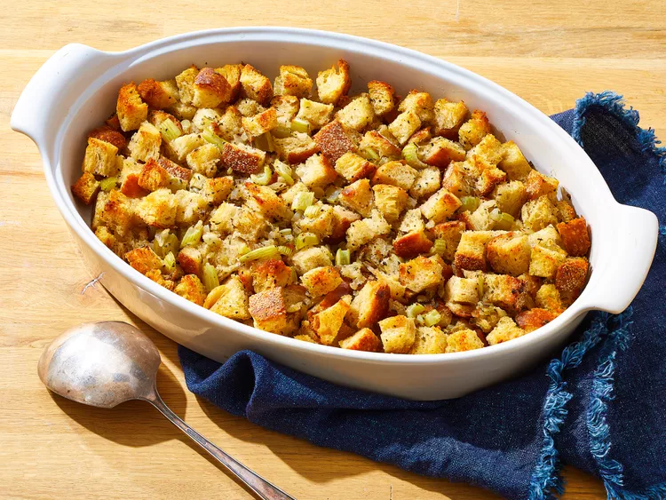
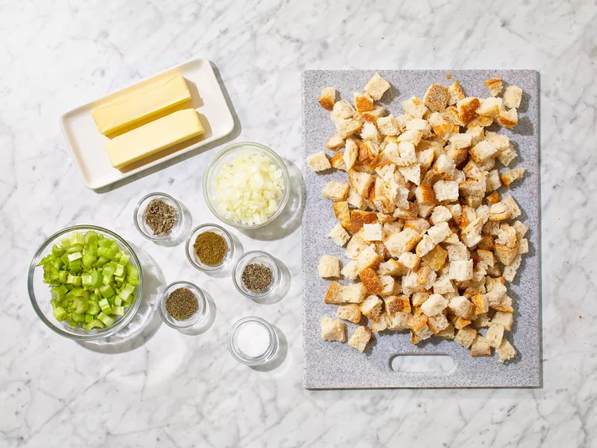
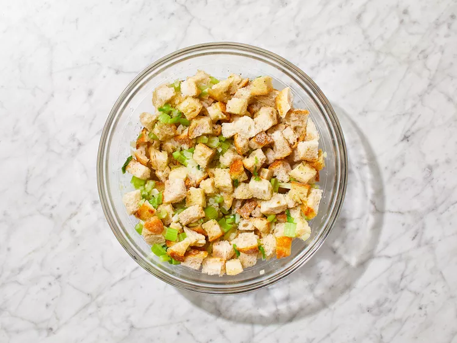
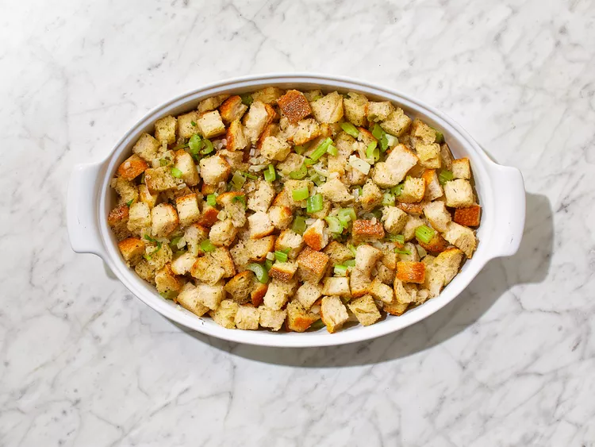
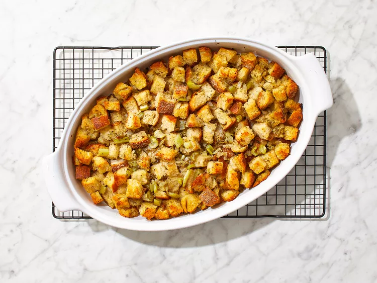

This classic stuffing has been a family favorite for years, and we often double the recipe to feed a crowd.
This perfectly seasoned bread stuffing will be an easy-to-make and super flavorful addition to your holiday table.
You'll need the following ingredients to make this bread stuffing recipe.
Here are how many of these ingredients you need.
??? The dish should be divided into 8 individuals
Here's a brief overview of what you can expect when you make homemade bread stuffing:
Here's a step-by-step instructions:
Step 1: Gather all ingredients
Step 2: Preheat the oven to 350 degrees F (175 degrees C)
Step 3: Melt butter in a large skillet over medium-high heat. Cook celery and onion in butter until softened, 5 to 10 minutes.
Step 4: Place bread cubes in a large bowl. Season with Salt, sage, thyme, poultry seasoning, and black pepper.

Step 5: Add cooked onion-celery mixture to bread cubes; stir.
Step 6: Pour bread mixture into a large casserole dish; cover the dish with aluminum foil.
Step 7: Bake in the preheated oven until heated through and golden on top, about 1 hour.
